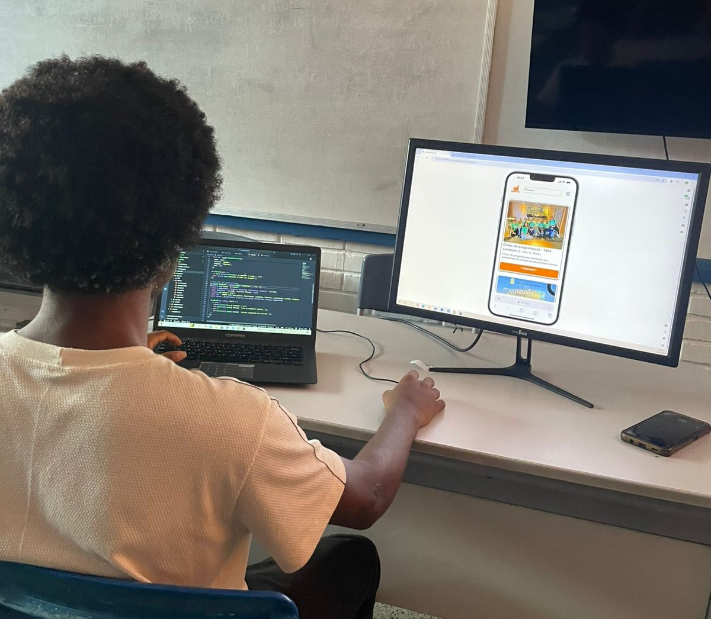

Sobre mim
Olá eu me Chamo Mateus Claudio, tenho 16 anos, estudante de TI com foco em desenvolvimento web.
Carrego comigo um espírito empreendedor desde muito cedo: montei minha primeira barbearia aos 15 anos
o que me permitiu ampliar minha visão no mundo dos negócios e desenvolver habilidades como:
- Gerenciamento de tempo
- Espírito empreendedor
- Atendimento ao cliente
- Pró-atividade
Atualmente estou desenvolvendo competências e habilidades por meio do programa de capacitação profisional ford-enter para dar continuidade ao meu projeto DIGNITEcA vitrine da favela um sistema web ainda em desenvolvimento criado para promover o trabalho decente e o crescimento econômico (8° Objetivo de Desenvolvimento Sustentável) a qual está sendo desenvolvida como proposta de solução do meu Projeto de Pesquisa: "A arte da sobrevivência e econômia popular"
